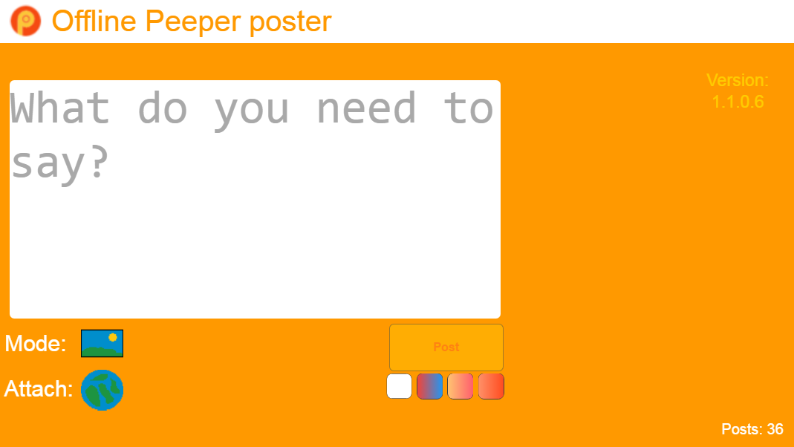
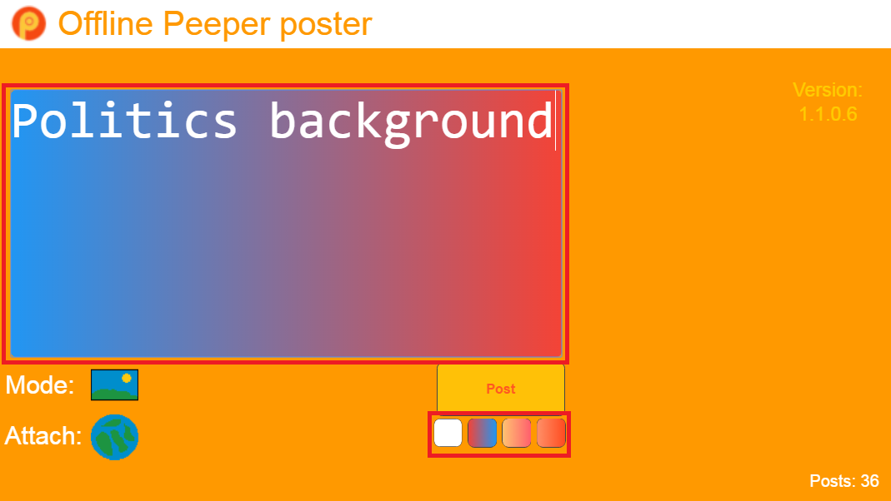
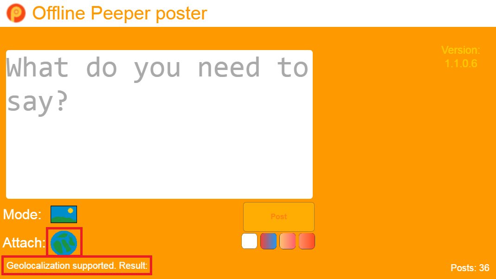
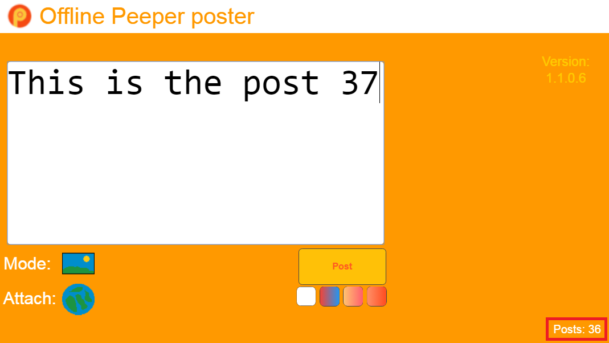
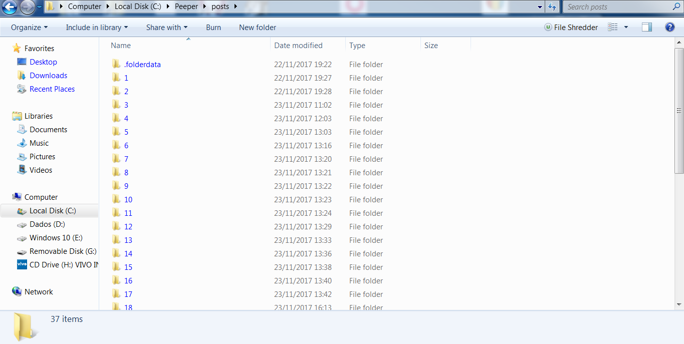

No Internet connection? Don't want to publish now? Draft posts for Peeper!
With Offline Peeper poster app, you can write posts and save them to your disk.
view_headline Features
Set a background for your post.

Attach your location in a post.

Know how many posts you have.

Posts are saved in your disk. You have the control over your posts.